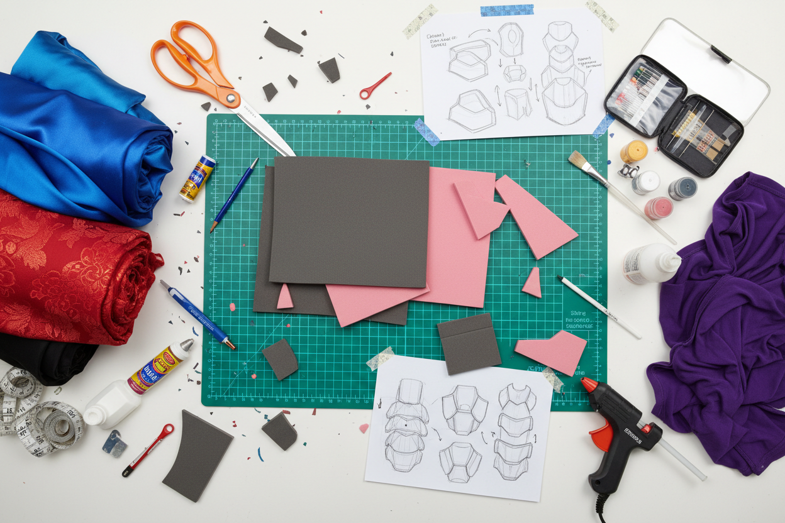

Vuoi iniziare nel mondo del cosplay ma non sai da dove partire? Questa guida completa ti accompagna passo dopo passo, dal scegliere il tuo primo personaggio fino a presentarti alla tua prima fiera.
Il Primo Passo: Scegliere il Personaggio Giusto
La scelta del personaggio è il momento più emozionante e, allo stesso tempo, più delicato per chi si avvicina al cosplay per la prima volta. Il consiglio d'oro è semplice: scegli un personaggio che ami davvero.

Per i principianti, è consigliabile partire da personaggi con costumi relativamente semplici: pochi pezzi, colori chiari, senza armature complesse o acconciature impossibili.
La Tua Prima Fiera
Le fiere sono l'occasione perfetta per imparare dal vivo. Avvicinarsi ai cosplayer con costumi che ti ispirano e chiedere loro dei materiali usati o delle tecniche applicate è fondamentale.
Non aver paura di fare domande: i cosplayer esperti ricordano tutti com'era essere principianti e sono quasi sempre disposti ad aiutare.